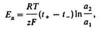

Диффузионные потенциалы. Потенциометрическое титрование. Поляризация электродов. Полярография. Перенапряжение.
ДИФФУЗИОННЫЙ ПОТЕНЦИАЛ, разность потенциалов на границе двух соприкасающихся растворов электролитов. Обусловлен тем, что скорости переноса катионов и анионов через границу, вызванного различием их элсктрохим. потенциалов в растворах 1 и 2, различны. Наличие диффузионный потенциал может вызывать погрешность при измерениях электродного потенциала. поэтому диффузионный потенциал стремятся рассчитать или устранить. Точный расчет невозможен из-за неопределимости коэф. активности ионов, а также отсутствия сведений о распределении концентраций ионов в пограничной зоне между соприкасающимися растворами. Если в контакте находятся растворы одного и того же z, z - зарядного электролита (z - число катионов, равное числу анионов) разл. концентраций и можно считать, что числа переноса анионов и катионов, соотв. t+ и t_, не зависят от их активности, а коэф. активности анионов и катионов равны между собой в обоих растворах, то диффузионный потенциал .где a1 и а2 - средние активности ионов в растворах 1 и 2, Т - абс. температура, R - газовая постоянная, F - постоянная Фарадея.
Потенциометрическое титрование основано на измерении потенциала электрода в процессе титрования и определении точки эквивалентности по резкому скачку потенциала. Потенциал электрода используется в качестве индикатора в потенциометрическом титровании, поскольку существует линейная зависимость между электродным потенциалом и логарифмом активности ионов.
С помощью потенциометрического титрования могут решаться как аналитические, так и физико-химические задачи:
определение концентрации одного или нескольких веществ, присутствующих в растворе;
определение кажущихся констант диссоциации слабых кислот и оснований;
определение константы нестойкости комплексных ионов;
определение произведения растворимости Ks;
определение нормальных окислительно-восстановительных потенциалов
По типу реакций, протекающих в растворе, потенциометрическое титрование можно подразделить на следующие виды:
титрование окислительно-восстановительных систем;
титрование с образованием малорастворимых соединений;
титрование кислот, щелочей, солей, подвергающихся гидролизу;
титрование с образованием комплексных соединений.
Чтобы измерить потенциал, в потенциометрическом титровании используются индикаторный электрод и электрод сравнения.
Для потенциометрического титрования собирают цепь из индикаторного электрода в анализируемом растворе и электрода сравнения. В качестве электродов сравнения чаще всего применяют каломельный или хлорсеребряный.
В кислотно-основном титровании в качестве индикаторного обычно используют стеклянный электрод, как правило, входящий в комплект серийно выпускаемых промышленностью pH-метров. Потенц
иометрический метод позволяет провести количественное определение компонентов в смеси кислот, если константы диссоциации различаются не менее чем на три порядка.
Электрохимическая поляризация. При электролизе происходит химическое превращение в результате протекания электрического тока через электролит. Этот процесс противоположен протекающему в гальванических элементах, производящих работу. При электролизе затрачивается энергия внешнего источника, который обеспечивает прохождение постоянного тока через раствор или расплав. При этом на отрицательном электроде, который принято называть катодом, разряжаются катионы, а на положительном электроде - аноде разряжаются анионы. Прохождение тока вызывает изменение электрического состояния электродов и их потенциалов. Разность между потенциалом электрода, когда через систему протекает постоянный ток, и потенциалом при равновесии и том же электролите называется поляризацией. Таким образом, протекание через электролит более или менее значительного постоянного тока делает систему неравновесной.
Поляризация электродов оказывывает сильное влияние на постоянство действия элемента. Если электродный процесс осложнен химический реакцией, которая предшествует электрохимический стадии или следует за ней, то ПОЛЯРИЗАЦИЯ может быть обусловлена конечной скоростью этой реакции (химический стадии). При зарождении новой фазы на поверхности электрода возникновение ПОЛЯРИЗАЦИЯ связано со стадиями образования двухмерных или трехмерных зародышей, поверхностной диффузией адсорбир. атомов или ионов, встраиванием их в кристаллич. решетку и т.п.
Полярография — один из важнейших электрохимических методов анализа и исследования. Предложен Я. Гейровским в 1922 г. Измеряют предельный ток, величина которого пропорциональна концентрации определяемого вещества. Величину предельного тока находят по кривой зависимости силы тока от приложенного напряжения (такая кривая называется полярограммой). Для получения полярограммы нужно, чтобы поверхность катода была значительно меньше поверхности анода. Полярография применяется для количественного определения ряда ионов (кадмий, цинк, свинец и др.), некоторых органических веществ.
ПОЛЯРОГРАФИЯ, разновидность волътамперометрии с использованием индикаторного микроэлектрода из жидкого металла. пов-сть которого периодически или непрерывно обновляется. При этом не происходит длительного накопления продуктов электролиза на пов-сти раздела электрод-раствор в электролитич. ячейке. Индикаторным электродом в полярография служит чаще всего ртутный капающий электрод. Исполь-зуют также капающие электроды из жидких амальгам и расплавов, струйчатые электроды из жидких металлов, многокапельные электроды, в которых жидкий металл или расплав продавливают через диски из пористого стекла, и др.
На полярограммах, регистрируемых в полярография при использовании капающих индикаторных электродов, наблюдаются осцилляции I, пропорциональные величине I. Эти осцилляции связаны с постепенным увеличением пов-сти капли и ее периодич. обрывами. Для сглаживания осцилляции используют регистрирующие приборы (гальванометры) с большой константой времени, демпфирование, например, с помощью RC-цепочек (электрич. цепей, состоящих из резисторов и конденсаторов), или стробирование, т. е. запись тока в течение непродолжит. интервала жизни каждой капли, причем ток поддерживают неизменным до аналогичных измерений на следующей капле. Постояннотоковую полярография со стробирова-нием называют таст-полярографией. Среднее значение I зависит от периода капания, который меняется с изменением Е. Чтобы период капания в растворе данного состава поддерживать постоянным, каплю обрывают, например припаянной к концу капилляра лопаточкой или ударами электромагн. молоточка. Такой принудит. обрыв капли часто сочетают со строби-рованием. При малых периодах капания (менее 0,5 с) в случае электродов с принудит. обрывом капель очень велика емкостная составляющая тока, обусловленная заряжением двойного электрич. слоя у пов-сти свежезародившейся капли; это позволяет изучать адсорбцию орг. веществ на капающем электроде. Области применения полярография и используемая в этом методе аппаратура такие же, как в волътамперометрии. Особая область использования полярография-исследование и анализ металлич. расплавов и амальгам (в т. наз. амальгамной полярография, т.е. в полярография с капающими амальгамными индикаторными электродами).
Широко используется полярография в орг. химии для анализа и изучения реакц. способности индивидуальных веществ, а также для установления механизма электродных процессов, выявления возможности осуществления электросинтеза и нахождения оптим. условий его проведения. Потенциал полуволны Е1/2 в случае обратимых электрохим. процессов близок к термо-динамич. окислит.-восстановит. потенциалу системы; для необратимых процессов, когда скорость электрохим. стадии мала, Е1/2 определяется величиной стандартной константы скорости переноса электрона, которая в определенных условиях хорошо коррелируется с константами скорости хим. реакций этих веществ и с их термодинамич. характеристиками (см. Корреляционные соотношения). На значения Е1/2 необратимых электродных процессов существ. влияние оказывает строение двойного электрич. слоя.
Предельный (или максимальный) ток в полярография может определяться не только диффузией веществ к электроду, но и скоростью образования электрохимически активного вещества в результате хим. реакции. Такой ток называют кинетическим. Он м. б. объемным, если реакция протекает в приэлектродном пространстве, или поверхностным, если в реакции участвует хотя бы одно вещество, адсорбированное на пов-сти электрода. Если электрохимически активная форма регенерируется в результате хим. превращений из продукта электродной реакции, то такие процессы называют каталитическими. Изучение кине-тич. и каталитич. волн в полярография позволяет определять константы скорости быстрых хим. реакций, например взаимод. анионов кислот с ионами Н3О+ , комплексообразования, окисления.